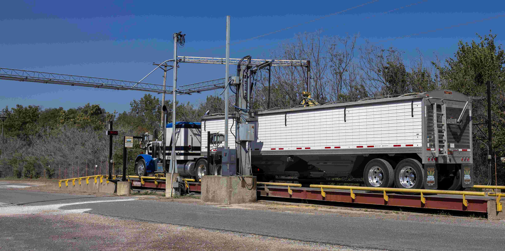

Key operational advantages
True unmanned workflow:
WBOS does not rely on partial staffing or console operators. The system provides a complete, guided, driver-self-service process from entry to exit.
Higher vehicle throughput:
A streamlined workflow significantly reduces time on site, allowing more vehicles to be processed per hour without additional infrastructure.
Reduced operational overheads:
Centralised visibility and automated data capture minimise the need for on-site administrative staffing, improving accuracy and consistency.
Compatible with any weighbridge environment:
WBOS integrates with existing weighbridges, indicators, cameras and traffic equipment across all facility types, supporting mixed fleets and multi-site networks.
Environmental and regulatory reporting support:
WBOS assists compliance teams by structuring and exporting the data required for:- EPA waste contribution reporting
- levy liability calculations
- material categorisation
- environmental audit documentation
This enables accurate, streamlined reporting aligned with regulatory expectations.
Enterprise-grade security and Australian cloud hosting:
Data is stored within secure Australian data centres, protected by advanced security frameworks including encryption at rest, encrypted transmission, strict authentication, continuous monitoring and high-availability architecture. This ensures confidentiality, integrity and availability for mission-critical weighbridge operations.
On-Premise (Offline) deployment option:
For organisations preferring internal hosting, WBOS supports a fully offline environment with localised data storage. Organisations may request migration to cloud hosting if requirements evolve.